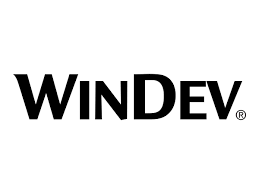

Skills
C

C++

C#

Go

Java

Python

Unity

Pack Office

WinDev
Arduino

Je suis Davy MARTHELY.. étudiant en informatique passionné d'informatique et de technologie actuellement en Bachelor à Ynov Campus Aix-en-Provence. Je suis un développeur polyvalent avec une forte expérience dans plusieurs langages de programmation. J'ai une solide expérience dans la gestion de projets technologiques, la conception de sites web et la gestion de base de données. Je suis constamment à la recherche de nouvelles opportunités pour créer des solutions innovantes et je suis impatient de contribuer à des projets stimulants où je peux mettre en valeur mes compétences et ma passion pour l'informatique.
Premier projet de type application réalisé au cours de mon stage de l'été 2023 au sein de l'entreprise PRECIDEV par le biais du logiciel de programmation WinDev. C'est un logiciel de gestion pour enregistrer son avancée à la fois en thermes de manga et d'anime.
Ce projet a été réalisé par une équipe de 3 élèves d'Ynov. La création de ce forum avait pour but de rapprocher les élèves de notre campus à travers les filières, afin d'apporter l'entre-aide pour les projets futures et autres activités réalisées pour la cohésion.
Une simple ébauche d'une boutique en ligne réalisée avec du Js pour l'ajout et le retrait des articles du panier dans le cadre d'un TpJs comprenant plusieurs projets
Inspiré par Fruit Ninja, notre jeu "FruitSlicer" consiste à trancher à l'écran des fruits tombant aléatoirement avant qu'ils ne touchent le sol, avec la présence de malus et bonus. A travers ce projet formatif, nous avons pu apprendre les bases du développement collaboratif sur Unity à partir d'un concept simple mais efficace sur une courte période de programmation.

Made with by Davy